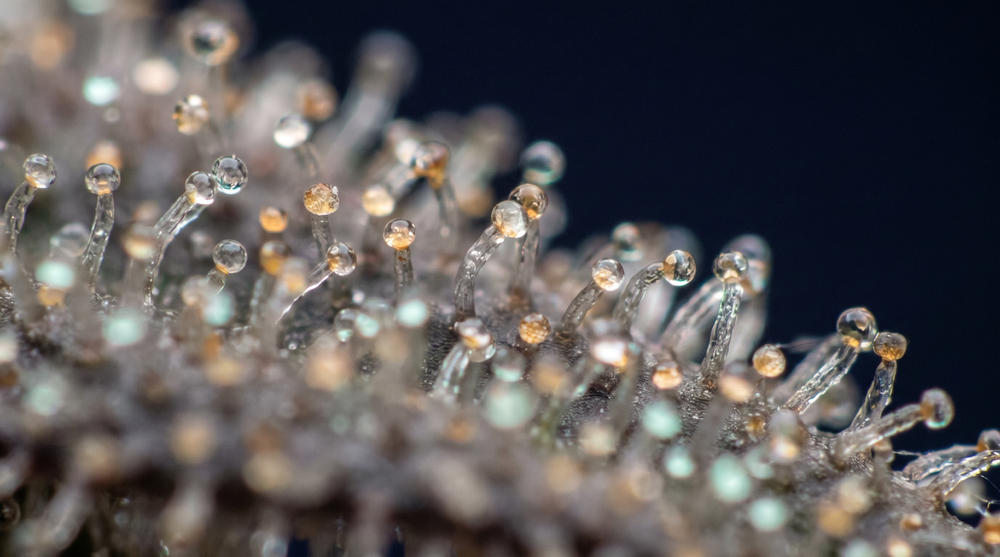

3
médicos com RQE
Todo corpo tem um sistema endocanabinoide. Nós tratamos com rigor clínico, prescrição responsável e acompanhamento contínuo — conduzidos por médicos especialistas.
médicos com RQE
anos de experiência clínica
pacientes em tratamento
Seleção rigorosa de extratos com certificados de análise (COA) e padronização internacional.
Especialidades registradas (CRM · RQE) e certificação internacional WeCannAcademy em medicina endocanabinoide como formação complementar.
Suporte contínuo entre consultas, ajustes finos de dosagem e canal direto com a equipe clínica.
Conteúdo técnico de alta qualidade para ampliar a autonomia de pacientes, familiares e profissionais de saúde.
Nossa premissa
Contra o achismo, apresentamos métodos.
Cada conduta nasce de estudo e acompanhamento — não de modismo nem de promessa fácil.
Consulta detalhada com histórico clínico, exame físico e revisão de exames anteriores quando houver.
Indicação do produto adequado (CBD, THC ou combinação) na dose correta para o seu caso, com orientações claras.
Reavaliações periódicas, ajustes de dose e suporte ao longo de todo o tratamento.

O CoA é o laudo que diz o que realmente está no frasco. Sem ele, não há como sustentar uma prescrição responsável.
Isolado, broad ou full-spectrum: a formulação é definida caso a caso, na avaliação clínica — considerando presença de THC, interações medicamentosas e o quadro do paciente. Não por preferência de prateleira.
Áreas clínicas em que os canabinoides vêm sendo estudados ou podem ser considerados após avaliação individual, organizadas por sistema. A indicação é sempre caso a caso, conduzida por médico.
Conhecer todas as indicações →Dor crônica · Fibromialgia · Artrite
Epilepsia · Parkinson · Esclerose múltipla
Ansiedade · Insônia · Espectro autista
Dor oncológica · Náuseas · Caquexia
SII · Crohn · Retocolite
Endometriose · Dor pélvica · Cólicas
Ortopedista e Traumatologista
CRM-PR 47986 · RQE 37027
Graduado em Medicina pela PUC-PR, com residência em Ortopedia e Traumatologia pelo Hospital Universitário Cajuru e certificação internacional WeCannAcademy. Atende em Curitiba com foco em trauma, coluna e dor crônica musculoesquelética. Coordena a prática clínica da Axis.
Ortopedista e Traumatologista
CRM-PR 33952 · RQE 32175
Ortopedista pela UFPR, especialista em cirurgia da coluna com ênfase em cirurgia minimamente invasiva. Certificação WeCannAcademy em medicina endocanabinoide. Atua em avaliação clínica e coordenação clínica da Axis.
Médico Cirurgião Geral
CRM-PR 45192 · RQE 35978
Cirurgião geral formado pelo Hospital do Rocio, com certificação WeCannAcademy. Foco em dor crônica musculoesquelética e indicações para cannabis medicinal.
Nossa equipe avalia, com método e honestidade, se a cannabis medicinal é apropriada para o seu caso.